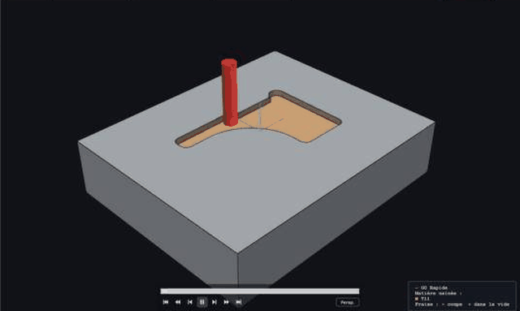
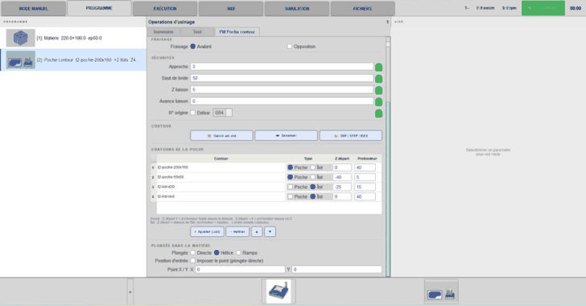
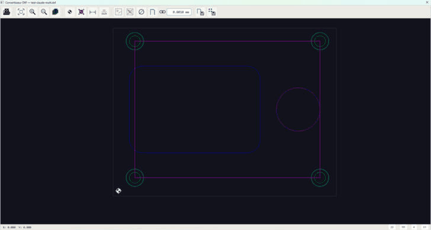
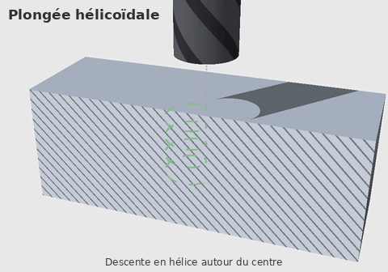
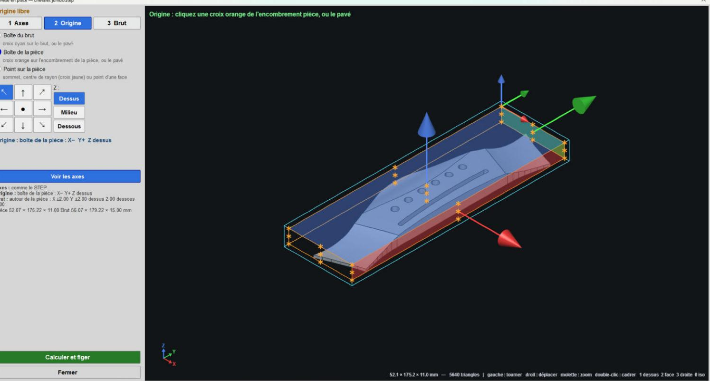
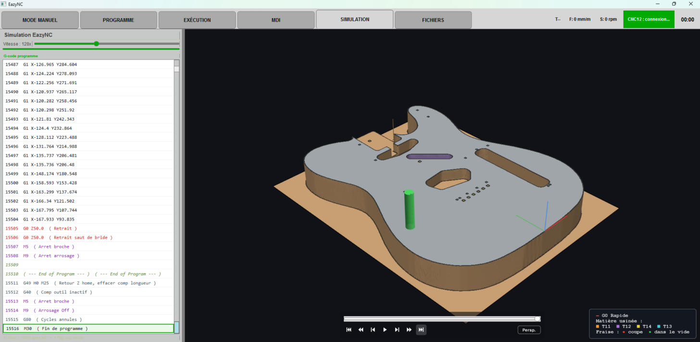

Programmer une CNC sans écrire de G‑code
EazySmartNC est un logiciel de FAO conversationnelle, gratuit et open source, pour les commandes Centroid CNC12 (Acorn, AcornSix, Oak). Vous remplissez des blocs (brut, poches, perçages, contours), le logiciel calcule les trajectoires, les simule en 3D et génère un programme .nc prêt à usiner. L'esprit de programmation des commandes Heidenhain, sur n'importe quelle machine qui fraise : fraiseuse ou défonceuse CNC.

AperçuCe que fait EazySmartNC
Un programme simple, lisible par tout le monde, plutôt qu'une montagne de G-code. Chaque bloc correspond à une opération d'usinage, avec des écrans d'aide animés pour chaque paramètre.
Poche contour avec îlots
Une ligne par contour, en poche ou en îlot, avec son Z de départ et sa profondeur. Le cycle découpe la hauteur en tranches à chaque niveau et calcule la zone à vider à chaque passe. Les poches étagées et les îlots sous la surface sont gérés.

Convertisseur DXF
Sélection d'un contour en un clic (chaînage automatique, sens d'usinage, éléments à cocher comme sur une commande TNC) et sélection des positions de perçage par fenêtre, avec un filtre par diamètre.

Aide 3D animée
Chaque champ de saisie affiche une courte animation 3D : modes de plongée, profondeur de passe, plans d'approche et de dégagement, recouvrement, surépaisseurs, avalant ou opposition, rayon d'entrée…

Usinage 3D depuis un fichier STEP
Mise en place de la pièce en trois étapes : axes machine choisis en cliquant les faces, origine sur le brut, sur la pièce ou sur n'importe quel point, puis brut autour de la pièce. Le bloc Usinage 3D ébauche et finit couche par couche.

Simulation 3D
Enlèvement de matière en temps réel, une couleur par outil, lecture du G-code ligne par ligne. Vous vérifiez le programme avant de lancer la machine.

FonctionsTout ce qu'il faut pour l'atelier
Les cycles d'usinage courants, une table d'outils et la liaison avec la commande CNC12.
Programmation par blocs
- Brut (BLK FORM) avec paramètres hérités par tous les blocs
- Copier, couper, insérer plusieurs blocs
- Fichiers programme, contours (.cnt) et motifs de points (.pnt)
Cycles d'usinage
- Poches rectangulaires, circulaires et contour
- Contournage : ébauche adaptative, R0 / RL / RR
- Fraisage de trou en hélice
- Perçage, débourrage, pointage, taraudage, alésage
Stratégies
- Plongée droite, en hélice ou en rampe
- Ébauche et finition séparées, surépaisseurs
- Avalant ou opposition
- Correction de rayon calculée par le logiciel (G40)
Outils, import, machine
- Table d'outils : avances en mm/min, mm/tr ou mm/dent
- Import DXF, et STEP/IGES via OpenCASCADE
- Pages Manuel, Exécution et MDI reliées à CNC12 via l'API Centroid
PourquoiUn logiciel pensé par un fraiseur
EnglishConversational CAM for Centroid CNC12
EazySmartNC (application EazyNC) is a free, open-source conversational CAM program for Centroid CNC12 controls (Acorn, AcornSix, Oak), in the spirit of Heidenhain conversational programming. You fill in blocks (stock, pockets, drilling, profiles), the software computes the toolpaths, simulates them in 3D and generates a ready-to-run .nc program. It includes a DXF converter, STEP import for 3D machining, a tool table and an optional live link with CNC12. Written in C++ / Qt 6 by a CNC machinist. The user interface is currently in French.